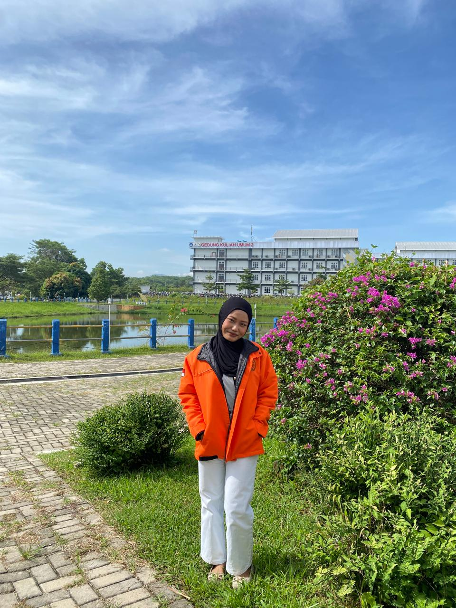
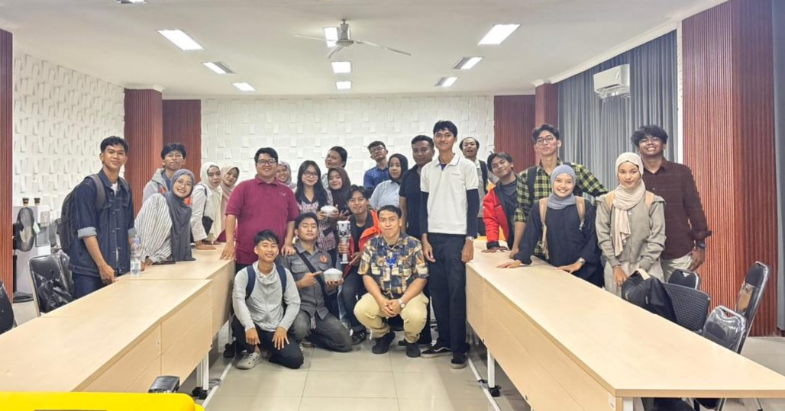
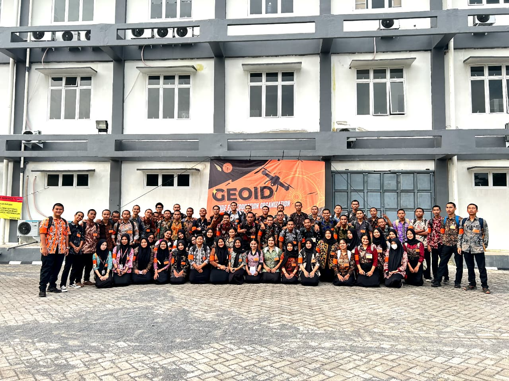
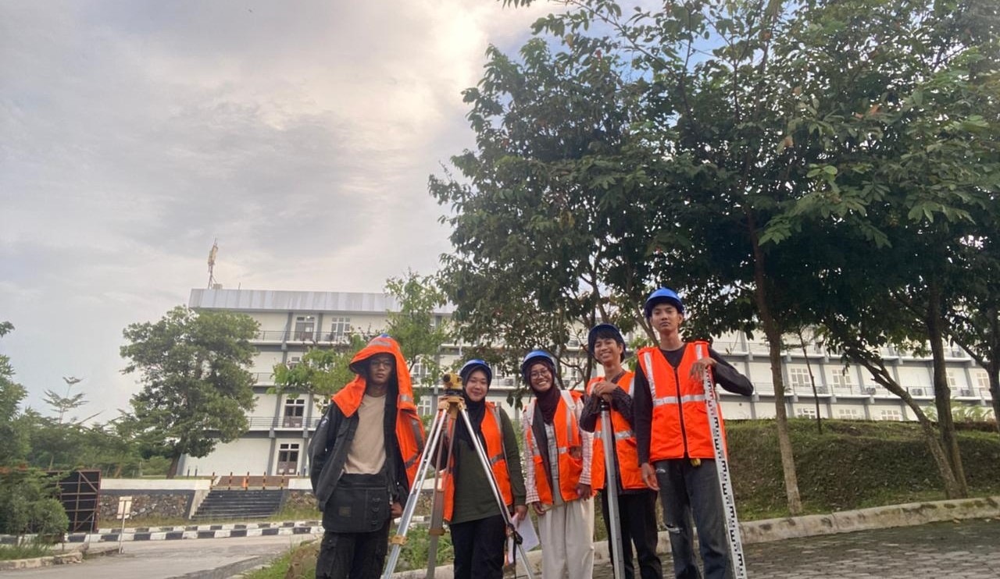
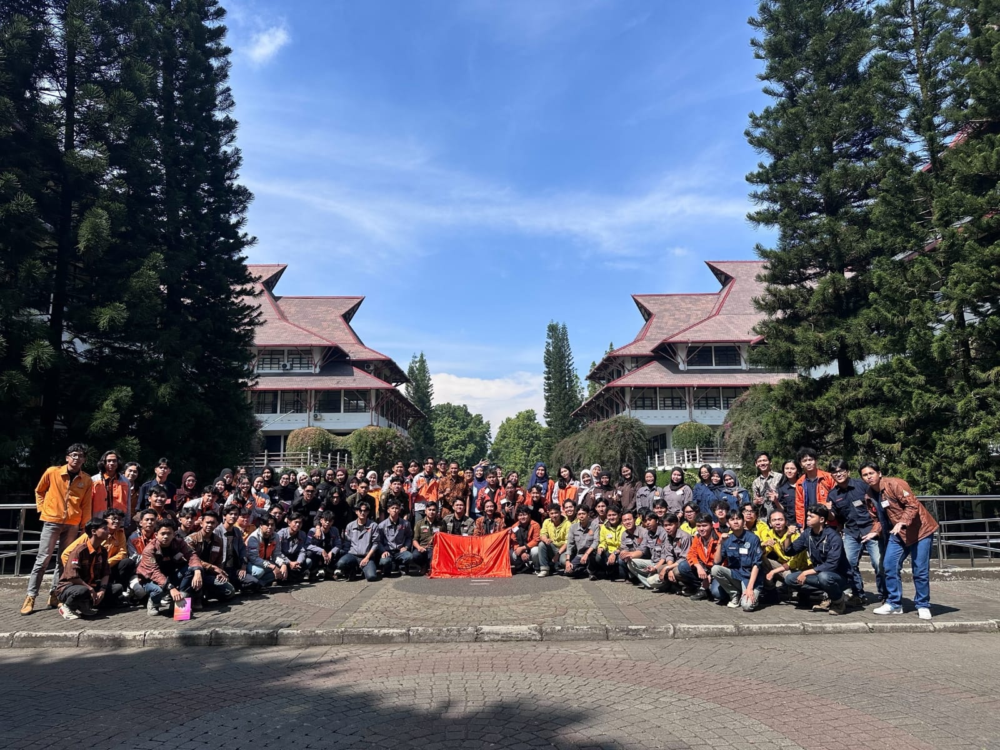

Mahasiswa Teknik Geomatika

Nama: Maulia Putri Utami
NIM: 124230041
Program Studi: Teknik Geomatika
Institusi: Institut Teknologi Sumatera
Email: maulia.124230041@student.itera.ac.id
Halo, saya Maulia Putri Utami, mahasiswa Program Studi Teknik Geomatika di Institut Teknologi Sumatera. Saya merupakan pribadi yang senang mencoba hal-hal baru, mendapatkan pengalaman, bertemu dengan orang baru, serta mengikuti berbagai kegiatan selama masa perkuliahan.
Saya juga memiliki hobi traveling dan fotografi. Bagi saya, traveling memberikan kesempatan untuk melihat tempat dan pengalaman baru, sedangkan fotografi menjadi salah satu cara untuk mengabadikan berbagai momen yang berkesan.
Selama menjalani lima semester perkuliahan, saya mendapatkan banyak pengalaman baru, baik dalam kegiatan akademik maupun kegiatan bersama teman. Saya belajar untuk menjadi lebih mandiri, bertanggung jawab, dan mampu bekerja sama dengan orang lain.
Setiap semester memberikan pengalaman yang berbeda. Mulai dari mengenal lingkungan kampus, mengikuti kegiatan perkuliahan dan praktikum, hingga mendapatkan berbagai pengalaman di luar kegiatan akademik. Semua pengalaman tersebut menjadi bagian dari perjalanan saya selama menjadi mahasiswa Teknik Geomatika.



